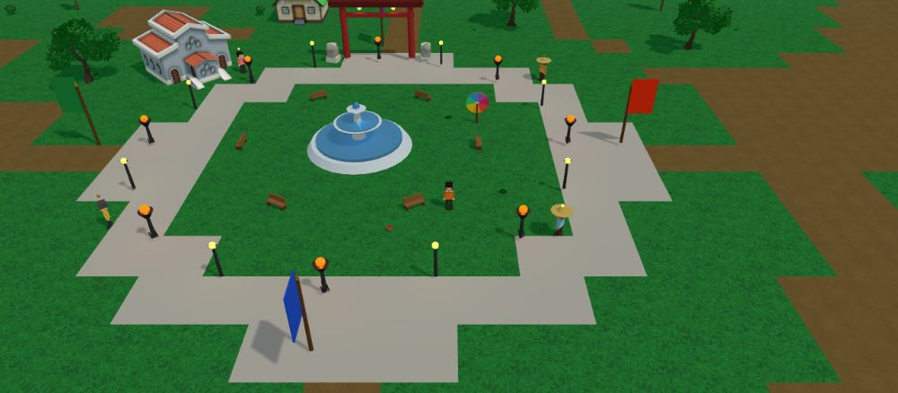
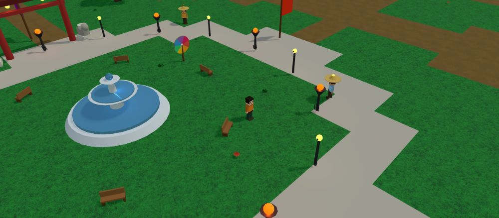
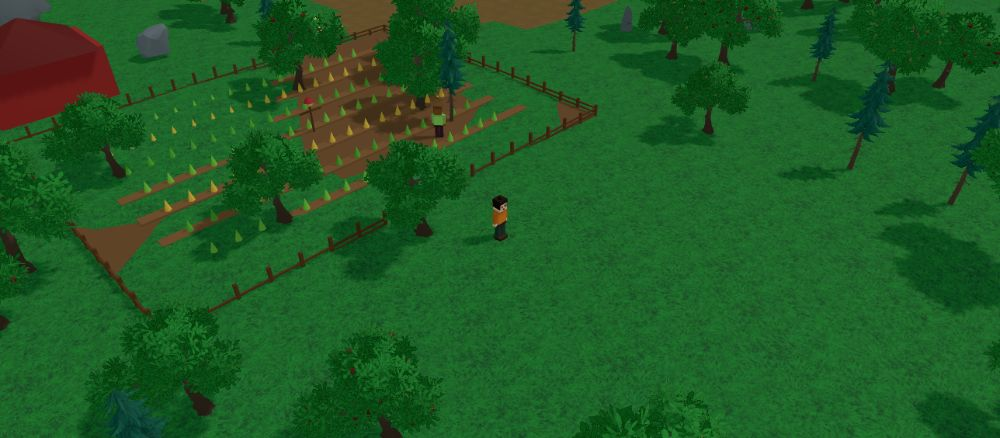

Game Guide
The complete reference for Daimyo — an isometric feudal-Japan MMO on Base, where you claim land, command soldiers, trade with NPCs, and rule with your clan.

📷 The realm of DaimyoIntroduction
Daimyo is a browser-based, real-time multiplayer world rendered in 3D. You play a warrior building influence across a feudal-Japan realm: gather resources from tasks, claim and conquer territory, grow an army, found a clan, and trade with townsfolk. The project token, $DYMO, lives on the Base network and gates entry to the game.
This guide documents systems that are live today. Beta is evolving quickly — features marked (planned) are not in the build yet.
Account & $DYMO
There is no email/password sign-up. Your identity is your wallet:
- Connect MetaMask from the landing page.
- The game reads your $DYMO balance on Base. You must hold ≥ 1,000 $DYMO to enter.
- The first time a wallet connects you choose a username; it is saved to that wallet, so you skip straight to server select next time.
Token contract (Base): 0xad7d9796c62f2200b5885838a8165620b6bacba3
Your First Session
- Open the site and click Play Now (or Connect Wallet).
- Approve the connection in MetaMask. If you hold 1,000+ $DYMO you pass the gate.
- Enter a username (first time only), then pick a server.
- You spawn at the Imperial Capital. Move with WASD, talk to NPCs with F, and enter buildings with E to do tasks for starting Gold.
- Recruit a few soldiers, then click nearby land to claim your first territory.
World & Map
The realm is a single circular island bordered by ocean. Elevation rolls gently; the spawn plaza is flat. Press M (or the Map button) for the full world map, which shows the road network, rivers, your position, and five named landmarks: the Imperial Capital, the Rice Farm, and three outlying villages.
The mini-map (top-right) tracks you, other players, owned territory tints, and major landmarks in real time.

📷 The world map (press M)The Capital
The center of the realm. Key features:
- Fountain plaza — grassy spawn ringed by a stone path, lampposts and braziers.
- Town Hall, Tavern, Blacksmith, Church, School, Seed Store — enterable buildings with tasks.
- Torii gate and guardian statues as landmarks.
- A ring of houses and several friendly NPCs.
Villages, Farm & Wilds
Narrow paths lead out from the capital. Scattered villages each have a store and a cluster of houses. The Rice Farm sits to the southwest with tilled fields, a barn, hay bales and a scarecrow. Beyond the roads the land grows wooded with dense trees and rocks — room to expand your territory.

📷 The Rice FarmRivers & Bridges
Two rivers cross the realm. Water is impassable. The main roads cross each river on a wooden bridge with railings and support pillars; the decks line up with the paths so movement is seamless. Plan routes through bridges when expanding.
NPCs
NPCs wear a green NPC nametag and a floating marker. Stand near one and press F to open a dialogue. Continue through their lines, trade, or leave.
- Old Hiro — elder; realm lore.
- Samurai Yuki — combat advice.
- Merchant Aiko — apple for 3 gold (+5 rice).
- Farmer Mei — apple basket for 5 gold (+10 rice).
- Coin Trader Goro — 8 rice for 12 gold.
Territory & War
The map is split into 8×8-tile territories, each with a Japanese name. Click land to select a territory; a glowing square highlights it and the territory panel opens.
- Claim (unowned): costs 50 gold. You become owner; defense is set to your current soldiers.
- Attack (owned by another): costs 15 soldiers. Outcome compares your soldiers (×random) to the territory's defense. Win → you take it, defender loses soldiers, you gain a 30-gold bounty. Lose → the defense drops by 5.
- Owned territory tints with your color (or clan color) on the map and slowly generates passive Gold and Rice.
Soldiers & Combat
Combat in Daimyo is territory-based, not twitch melee. Your Soldiers stat is your army.
- Recruit: 20 gold → +5 soldiers (Recruit button).
- Attacks spend 15 soldiers and resolve instantly against territory defense.
- Your Level rises with soldiers, owned land, and gold.
Clans
Open the Clan panel to found or join a clan.
- Found a clan: 200 gold. You pick the name; you get a clan color.
- Join: pick any existing clan from the list.
- Clan members' names carry a clan tag in chat, and clan-held territory shares a color on the map.
Tasks & Buildings
Approach an enterable building (a prompt appears) and press E to go inside. The interior shows a task panel — start a task, wait for the timer, and collect the reward (Gold, Rice, or Soldiers). Press E near the door to leave. Tasks are the steady, risk-free income source.
Economy & Resources
Four resources drive play, shown top-left:
- 🪙 Gold — claim land, recruit, found clans, buy from NPCs.
- 🌾 Rice — food/economy; trade with Coin Trader Goro for gold.
- ⚔️ Soldiers — your army for attack and defense.
- 🏯 Lands — territories you own (passive income).
$DYMO is the on-chain token (Base) used to gate access; in-game balances above are off-chain and server-tracked. On-chain marketplace trading of items for $DYMO is (planned).
Movement & Camera
- WASD / arrows to move; the character animates a walk cycle.
- Right-drag the mouse (or Q / Z) to rotate the camera; scroll wheel to zoom.
- Buildings, trees, rocks, props, water and the world border are solid — you can't walk through them.
- The Home button returns you to the capital instantly.
Chat & Emotes
Press Enter to focus chat, type, and Enter again to send. Messages appear in the log (bottom-left) and as a bubble above your character for everyone on the server. Press E in the open (not next to a building) to cycle emotes: wave, cheer, jump.
Keybindings
- W A S D / Arrows — move
- E — emote, or enter/exit a building
- F — talk to nearby NPC
- M — world map
- Enter — chat
- Esc — close panels / map / dialogue
- Q / Z — rotate camera · Right-drag — rotate · Scroll — zoom
- Left-click land — select territory
Wallet & Base
Daimyo uses MetaMask and the Base network. On connect, the game queries your balance of the $DYMO contract via a Base RPC. You do not need to switch networks just to log in — the balance check reads Base directly. Holding fewer than 1,000 $DYMO shows: "You must own 1,000 $DYMO to play."
Troubleshooting
- "MetaMask not found" — install the MetaMask extension and refresh.
- Gate says you don't own $DYMO — confirm the tokens are on Base in the connected address.
- Stuck on loading — the 3D assets are downloading; give it a moment, then refresh if needed.
- Wrong username remembered — it's tied to your wallet; reconnect with the right wallet.
- Performance — close other heavy tabs; the world streams a lot of geometry.